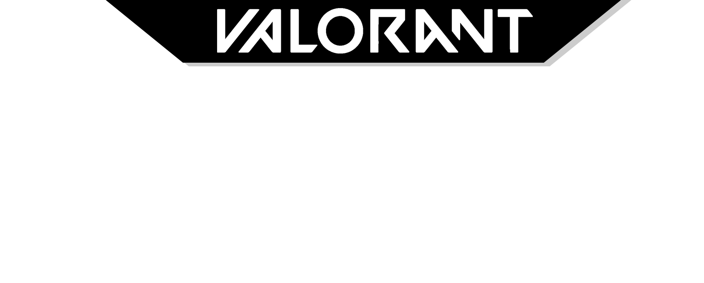
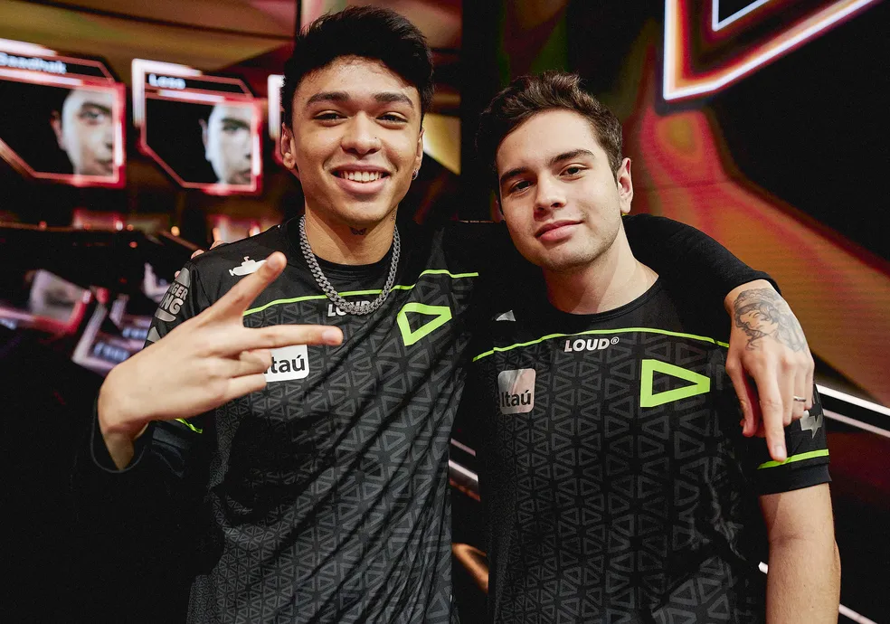

A trajetória da LOUD, time brasileiro finalista do mundial de Valorant
O Brasil é campeão mundial de Valorant! A LOUD venceu a OpTic por 3x1, levantando a taça do Valorant Champions 2022, sediado em Istanbul, na Turquia. A equipe afasta os fantasmas do passado, quando perderam a final do Masters Reykjavík 2022 para a mesma OpTic, e se colocam como o melhor time do mundo.
 Pancada e Less após se consagrarem campeões mundiais - Foto: Riot Games